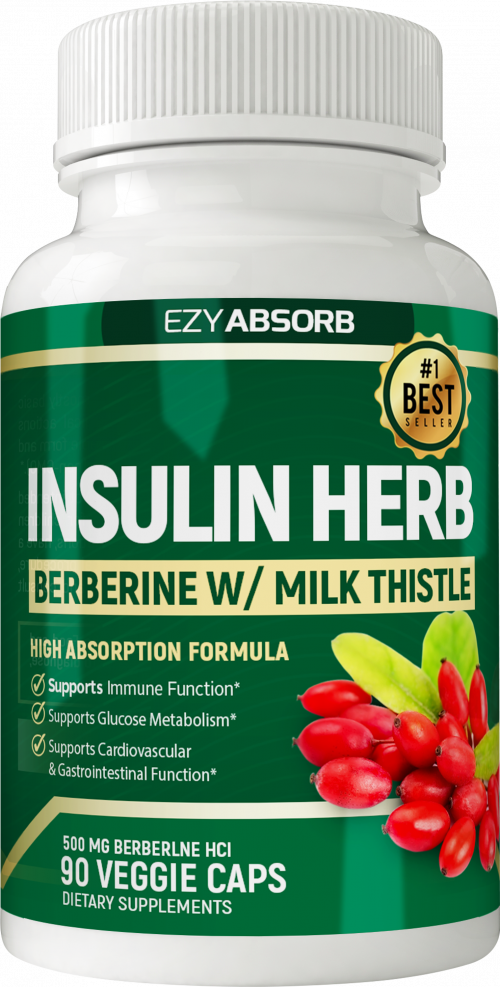

Diabetes Offer: Berberine Supplement
Product profile · Marketplace data 2026-10-09 · Sales-page research 2026-10-09 · Categories: Food Supplements

Marketplace record
| Product type | Supplements - health |
|---|---|
| Price | $80.68 (Single payment) |
| Affiliate commission | 60% |
| Refund window | Per the vendor's sales page — check the official page before buying |
| Vendor | simpleketo (listed since 2020-10-16) |
| Marketplace stats* | Cart conversion 6% · cancel rate 11.68% · affiliate earnings/sale $41.44 |
* Vendor-side marketplace statistics reported by Digistore24; they depend on traffic quality and are not a forecast.
Vendor's marketplace description
Compliant, non-hype written salespage - designed for Facebook traffic.
From the vendor's sales page
Page title: Introducing the Insulin Herb | Berberine
Meta description: Introducing the Insulin Herb | Berberine
Headline
“My Blood Sugar Stabilized… Thanks To This Herb!”
5 Specific Ways Berberine Can Stabilize Your Blood Sugar
CONVENIENT BERBERINE CAPSULES
Section headlines
- Decrease insulin resistance, making the blood sugar lowering hormone ‘insulin’ more effective
- Decrease sugar production in the liver
- Slow the breakdown of carbohydrates
- Increases the number of beneficial bacteria in the gut. ¹
- Removes deep body fat that accumulates around the belly and organs
Opening copy
Insulin Herb (Berberine) also known as the Ayurvedic Miracle Plant, has been traditionally used as medicine for centuries by the Indians and Chinese. Recent years, due to the increasing trend towards Natural Botany Solutions, Western societies have only been made aware of its impressive medicinal benefits.
The anti-hyperglycemic potential of Berberine has been confirmed by multiple human studies. This highlights the ability of Berberine to support blood sugar and cholesterol levels.
The growing numbers of research papers published in various prestigious journals, including the Journal of Metabolism , evaluated and confirmed the anti-diabetic potential of Berberine. (To read the full studies, follow the links at the bottom of this page.)
Prices mentioned on the page: $30 · $119.70 · $99.90 · $33.30 · $39.90 · $29.90 · $69.90 · $67 · $18 · $49 · $89.70 · $23.20
CTA buttons: “Buy Single Bottle 1 Month Supply $39.90” · “Buy Value Pack 3 Month Supply $99.90 (Save 16%)” · “Click Here To Choose Your Bottles Now”
Research method: raw HTML fetch · 2617 words on page · quality: rich · researched 2026-10-09. Full research file (MD) ↗
Where to check it out
Read the vendor's full sales page (current price, guarantee terms and bonuses are listed there):
View official sales page
That link is an affiliate link — if you buy through it we earn a commission from the vendor at no extra cost to you.